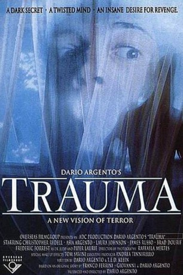

#6338 Aura
 
 IMDB-Wertung: 6.0 / 10
IMDB-Wertung: 6.0 / 10  Metascore: 0
Metascore: 0 
Eine an Anorexie leidende junge Frau entkommt aus einer psychiatrischen Klinik und lernt auf der Suche nach Hilfe einen jungen Mann kennen. Später wird sie wieder eingefangen und zu ihren Eltern gebracht, die bald darauf von einem Killer mit einer mechanischen Schlinge enthauptet werden. Dies sind nicht die einzigen Opfer in der Stadt und bald darauf machen sich das Mädchen und der junge Mann auf, eine Verbindung zwischen den Opfern zu suchen. Dabei geraten sie selbst in große Gefahr.
Jahr: 1993
Dauer: 111 Minuten
FSK: 18
Land: Italien Studio: Astro DistributionTonspuren:
Untertitel: Deutsch,
Auflösung: 1080p (1920x816) Größe: 6307 MB
Genre: Thriller, Horror, Mystery
Regisseur:  Dario Argento
Dario Argento
Drehbuch: Allen Hughes
Soundtrack:
Darsteller:
- Asia Argento als Aura Petrescu
 Piper Laurie als Adriana Petrescu
Piper Laurie als Adriana Petrescu Frederic Forrest als Dr. Judd
Frederic Forrest als Dr. Judd Laura Johnson als Grace Harrington
Laura Johnson als Grace Harrington James Russo als Capt. Travis
James Russo als Capt. Travis Brad Dourif als Dr. Lloyd
Brad Dourif als Dr. Lloyd- Sharon Barr als Hilda Volkman
- Peter Moore als Mark Leneer
- Lester Purry als Sgt. Carver
- Jacqueline Kim als Alice
- Fiore Argento als Farraday Clinic Receptionist , uncredited
- Tommy Lentsch als Paramedic , uncredited
- Christopher Rydell als David Parsons
- Dominique Serrand als Stefan Petrescu
- Ira Belgrade als Arnie
- Hope Alexander-Willis als Linda Quirk
- Isabell O'Connor als Georgia Jackson
- Cory Garvin als Gabriel Pickering
- Terry Perkins als Mrs. Pickering
- Tony Saffold als Ben Aldrich
- David Chase als Sid Marigold
- Rita Vassallo als Rita
- Stephen D'Ambrose als Pale man
- Bonita Parsons als Prime woman
- Gregory Beech als Deal man
- Kevin Dutcher als John Miller
- Kathy Quirk als Gare Grayson
- E.A. Violet Boor als Mrs. Potter
- Les Exodus als Reggae Band
- Onesmo Kibira als Reggae Band
- Innocent Mafalingundi als Reggae Band
- Charles Petrus als Reggae Band
- Lance Pollonais als Reggae Band
- Joel Edwards als Police Detective , uncredited
- Ric McCloud als Police Detective , uncredited
Datei: X:\FSK18-Collections\Dario Argento\Aura (1993, FSK18, 1920x816).mkv seit 08.06.2017
Festplatte: FSK18
 Es gibt insgesamt 10 Filme in der Gruppe 'FSK18-Collections\Dario Argento'
Es gibt insgesamt 10 Filme in der Gruppe 'FSK18-Collections\Dario Argento'